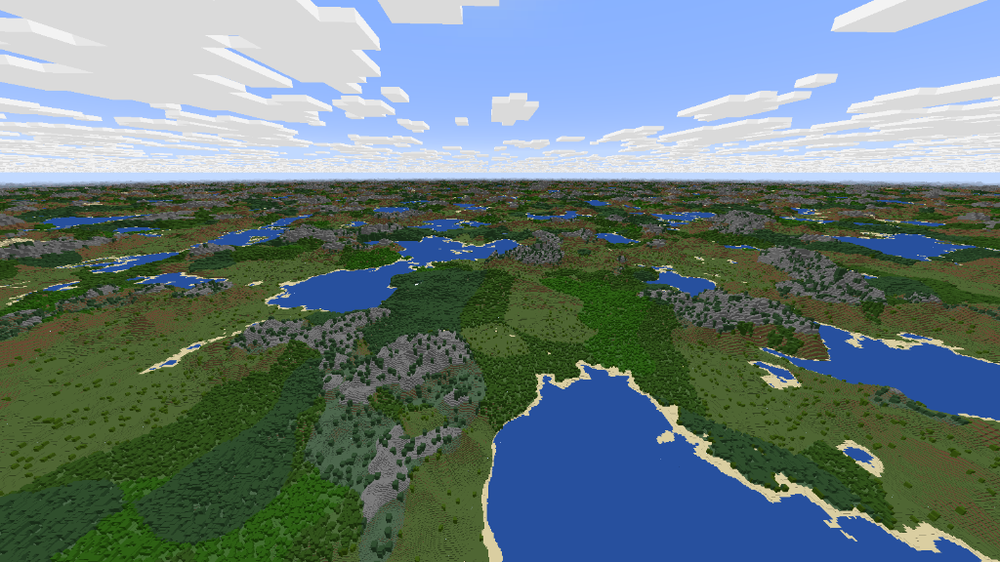
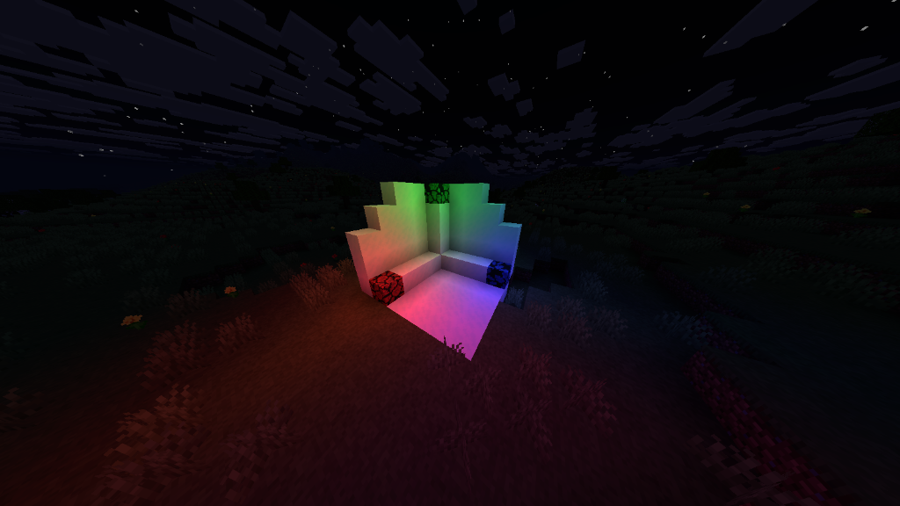
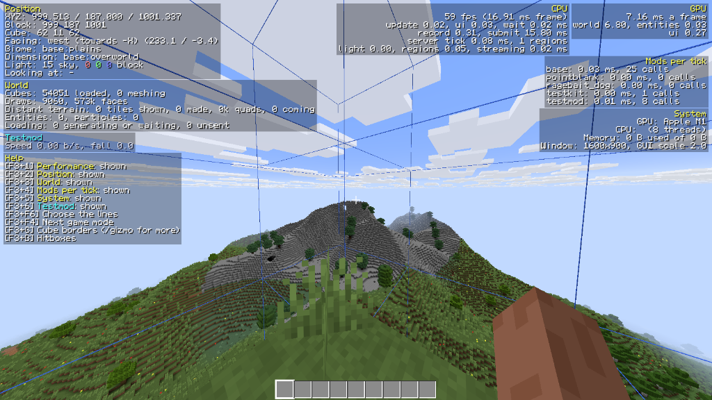

WEFT
VOXEL SANDBOX ENGINE IN RUST
It plays a lot like Minecraft, with survival and creative, crafting, mobs and caves. It isn't a clone, and it doesn't read Minecraft worlds.
Weft runs on Windows, Linux and macOS, so you'll need a computer for it.
Unpack it and run it, you need a GPU with Vulkan. It's still early, so the save format can change between versions.
The game itself is a mod called base, with no private hooks or priorities from the engine. If base can do something, your mod can too.
Read the cheat sheet Open examplemod
testmod is in the repo to prove you don't have to touch the engine.
How far the world goes
Chunks here are cubes, 16 blocks on every side, so there's no limit on height or depth.
Terrain is generated on the GPU, which is what lets distant terrain be drawn far past your view distance. There are caves and several dimensions, and biome colors blend into each other at the borders.

Time while you're away
There are no random ticks. Plants, furnaces and other timed blocks catch up on the time nobody was there for, even if their chunks weren't loaded, so a furnace you left smelting has kept going when you come back.
Playing with friends
In the pause menu, go to Multiplayer and pick Open to Friends. That gives you a ticket, and your friend pastes it into Multiplayer > Join. It works peer to peer, so you don't need a server or port forwarding.
For a world that stays up, weft --server runs one without a window or a GPU.
Light and textures
Blocks can emit colored light, and where two lamps overlap the colors mix. Textures can connect to their neighbors, pick random variants, animate or glow.
Resource packs and shader packs can change how all of it looks.

What else is in there
- Moving structures you can stand and build on
- Machines powered by energy
- A bucket that picks up any liquid
- Mobs that can find a path to you
- A built-in recipe viewer
What a mod looks like
This is a whole lib.rs. It adds a ruby, an ore that only drops it for an iron pickaxe or better, and veins of that ore between y -64 and 16. To get it running:
- Clone the repo, because a mod builds against the SDK in it.
- Copy
examples/examplemodand rename it. Every kind of registration is in there as a commented example. - Run
cargo build --release, then put the library and yourassetsinrun/mods/<name>/. The folder has to have the same name as the crate, or the game stops at load.
A released game keeps its mods in your user folders instead, and its Mods screen has a button that opens the right one.
use weft_sdk::*;
declare_mod!(deps: ["base"], init: init);
pub static RUBY: Item = Item::named("ruby");
pub static RUBY_ORE: Block = Block::named("ruby_ore");
static INGREDIENTS: CreativeTab =
CreativeTab::named("base:ingredients");
fn init(r: &mut Registry) {
r.block(&RUBY_ORE)
.hardness(3.0)
.mined_by("pickaxe", tool_tier::IRON)
.drops("ruby", 1);
r.item(&RUBY).tag("gems/ruby").tab(&INGREDIENTS);
r.ore(&RUBY_ORE).y(-64, 16).veins(2).vein_size(5)
.replaces("#stone_ore_replaceables");
}How mods work with each other
Things like fuel, food, durability, sand or ores/iron are components and tags, and those names belong to nobody. Any mod reads and writes them without depending on whoever added a certain block.
r.item(&COAL_DUST).set(&FUEL, 800).tag("hot"); // your own content
r.set("base:stick", &FUEL, 100); // someone else's
r.set("#planks/*", &FUEL, 300); // everything tagged
if let Some(ticks) = FUEL.on_item(stack.item) { /* burn it */ }Recipes use the same names. This line from the base game makes one recipe per material that has both tags, so a new wood from any mod gets its planks.
r.shapeless(C, "#planks/{m}", 4, &["#logs/{m}"], 0);Four ways to hook in
Try them in this order. Having to work around the engine to do something reasonable is an engine flaw, and it's better reported than built around with a hack.
// Events: batched once per tick, can't be canceled
r.on_event(&LEVEL_UP, |b| for e in b.iter() { /* ... */ });
// Questions: anyone may say no, any deny wins
r.before_event(&actions::BREAK_BLOCK, |q| {
if is_protected(q.pos()) {
Verdict::Deny
} else {
Verdict::Abstain
}
});
// Value chains: damage, attack damage, or your own
r.modify(&chain::DAMAGE, stage::MULTIPLY, |m| {
m.value *= 0.5
});
// Attributes: timed modifiers, saved with the entity
r.attribute(&MANA, 100.0, 0.0, 1000.0);When something goes wrong
F3+T reloads textures, translations, shaders and UI without restarting. F3 shows your mod's time per tick, /gizmo draws debug shapes and --log mod:mymod=debug turns on your debug lines.
A panic in your callback disables that callback and names your mod in the log. Native crashes write a report with the mod that was running.

Getting it to other people
weft --pack-mod run/mods/mymod makes a zip of your mod's folder. A library only runs on the system it was built for, so put the Windows, Linux and macOS ones in the folder and the same zip works on all three.
The release.yml in examplemod builds all three on GitHub and publishes the zip when you push a tag.
A mod built against another engine version refuses to load and asks to be rebuilt, so expect to rebuild yours for a new version.
Download
Windows, Linux and macOS are supported. A GPU with Vulkan is required.
Linux x64
Needs your GPU's Vulkan driver.
tar xf Weft-*-linux-x64.tar.gz
Weft/weftThe same game as one file. Vulkan, the GPU driver and sound still come from your system.
chmod +x Weft-*-linux-x64.AppImage
./Weft-*-linux-x64.AppImagemacOS
Vulkan comes with the game. The game isn't signed by Apple, so the second line clears the quarantine flag.
tar xf Weft-*-macos-arm64.tar.gz
xattr -dr com.apple.quarantine Weft
Weft/wefttar xf Weft-*-macos-x64.tar.gz
xattr -dr com.apple.quarantine Weft
Weft/weftWeft ships with its own textures. If Minecraft is installed through the official launcher or Prism, Weft builds a resource pack from that copy when it starts. The pack stays on your computer, and you can turn it off in Settings > Resource Packs.
To build it yourself you need Rust 1.95 or newer:
git clone https://github.com/Weft-Rust/Weft.git
cd Weft
cargo run --releaseIt's early
The save format can still change between versions, so a world may not carry over to the next one. If something breaks, report it on Discord or in the issues.
The mod interface and the save format can still change between versions. Issues and pull requests are welcome, for the engine, mods, textures or docs. Read the AI policy before opening a pull request, it applies to everyone.